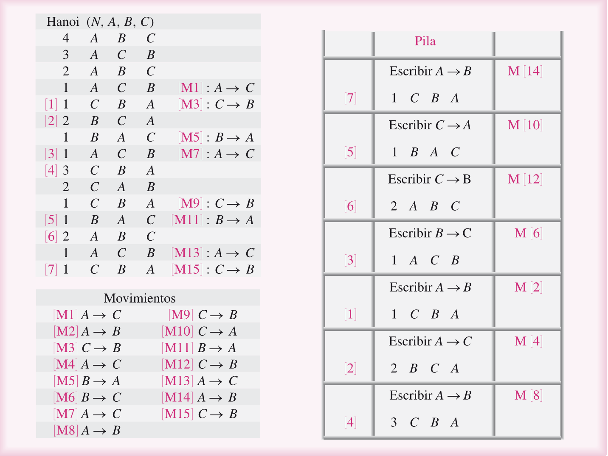

La recursividad en las torres de Hanoi
INTEGRANTES: Valeria Vicente, Aleph de Jesus, Edwin Jafet.
A. Planteamiento del problema
Hay tres postes (A, B y C) y n discos de distinto tamaño, apilados en A con el más grande abajo. El objetivo es llevar toda la pila al poste C.
- Solo se mueve un disco a la vez.
- Solo se puede mover el disco de arriba de un poste.
- Nunca se coloca un disco grande sobre uno más pequeño.
Pregunta clave: ¿cómo se resuelve con n discos sin saber de antemano todos los movimientos?
B. Caso base
Toda recursión necesita un punto donde se detiene. Aquí es el problema más pequeño posible: n = 0, es decir, cero discos. No hay nada que mover, así que la función simplemente regresa.
Sin caso base la función se llamaría para siempre y el programa se rompería con un StackOverflowError.
Con un solo disco (n = 1) tampoco hay misterio: se mueve directo de origen a destino. Internamente, lo hace llamando dos veces al caso base y moviendo en medio.
C. Cómo funciona el método recursivo
La idea: para mover n discos de origen a destino, se reduce a un problema igual pero con un disco menos.
1) Mueve los n−1 discos de arriba al poste auxiliar.
2) Mueve el disco más grande al destino.
3) Mueve los n−1 discos del auxiliar al destino.
Los pasos 1 y 3 son la misma función con n−1, cambiando los roles de los postes. Cada llamada resuelve un problema más chico hasta llegar al caso base.
Toca un poste para seleccionar su disco de arriba y luego toca el poste destino.
Algoritmo (línea activa)
Pila de llamadas
D. Código
public void resolver(int n, int origen, int destino, int auxiliar)
throws InterruptedException {
if (n == 0) {
return;
}
resolver(n - 1, origen, auxiliar, destino);
mover(origen, destino);
resolver(n - 1, auxiliar, destino, origen);
}
// Llamada inicial: A -> C usando B
panel.resolver(NUM_DISCOS, 0, 2, 1);
Cómo funciona este código
Los parámetros: n es cuántos discos hay que mover; origen, destino y auxiliar son los postes (0 = A, 1 = B, 2 = C). Lo importante es que los postes son roles, no nombres fijos: en cada llamada cambian de papel.
if (n == 0) return;es el caso base. Si no hay discos, no hace nada y regresa. Gracias a esta línea la recursión termina.resolver(n - 1, origen, auxiliar, destino)es la primera llamada recursiva. Pide que alguien (la misma función) mueva los n−1 discos de arriba hacia el poste auxiliar. Fíjate que el auxiliar toma el lugar del destino.mover(origen, destino)mueve un solo disco, el más grande, que ya quedó libre. Es el único momento en que algo se mueve de verdad (se actualiza la lista, se cuenta el movimiento y se dibuja).resolver(n - 1, auxiliar, destino, origen)es la segunda llamada recursiva. Lleva los n−1 discos desde el auxiliar hasta encima del disco grande. Ahora el origen original hace de auxiliar.
La función nunca sabe cómo mover muchos discos. Solo sabe mover uno y confiar en que la misma función resuelva el problema con un disco menos.
Traza con 2 discos
Así se ejecutan las llamadas de resolver(2, 0, 2, 1), es decir, de A a C usando B. Cada nivel de sangría es una llamada más profunda en la pila:
resolver(2, A, C, B)
resolver(1, A, B, C)
resolver(0, A, C, B)
mover A -> B (disco 1)
resolver(0, C, B, A)
mover A -> C (disco 2)
resolver(1, B, C, A)
resolver(0, B, A, C)
mover B -> C (disco 1)
resolver(0, A, C, B)
Son 3 movimientos: A→B, A→C, B→C. Con 3 discos, la primera llamada ya hace esta misma traza de 2 discos, mueve el disco 3 y vuelve a hacerla. Por eso el número de movimientos se duplica (y suma 1) con cada disco nuevo. Puedes verlo en vivo arriba, en «Ver la recursión».
E. Prueba
| Discos (n) | 2ⁿ − 1 esperado | Movimientos hechos | Reglas respetadas | Resultado |
|---|
F. Ejemplo con 4 discos
